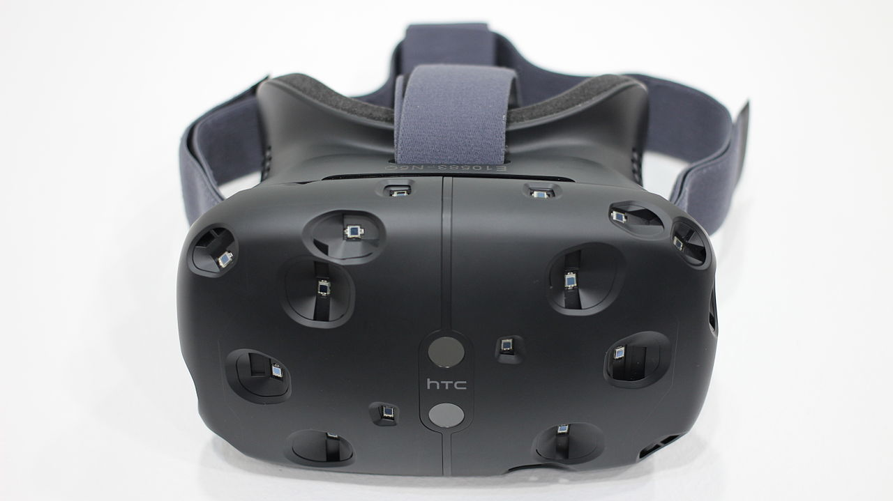

HTC Vive is a virtual reality headset developed by HTC and Valve Corporation, released on 5 April 2016. The headset is designed to utilize "room scale" technology to turn a room into 3D space via sensors, with the virtual world allowing the user to navigate naturally, with the ability to walk around and use motion tracked handheld controllers to vividly manipulate objects, interact with precision, communicate and experience immersive environments. Unveiled during HTC's Mobile World Congress keynote in March 2015, the HTC Vive has since been awarded over 22 awards in CES 2016, including best of CES.
